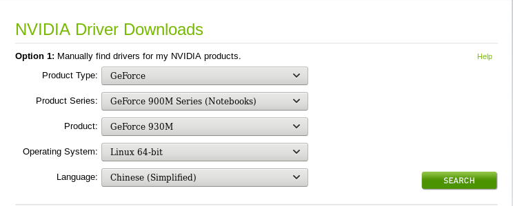

Kali默认安装的是开源项目nouveau为nvidia开发的开源驱动，但似乎在我的电脑上表现不怎么样，所以我开始折腾安装官方的闭源驱动。
更新内核
更新
1
2
3
4
5
6apt-get update
apt-get upgrade
apt-get dist-upgrade
apt-get install linux-headers-$(uname -r)
//提示是最新版，就可以了,一定要更新到最新内核，否则会出现很多未知错误。
reboot检验是否最新
1
2
3
4uname -r
//4.15.0-kali2-amd64
apt-cache search linux-headers
//若输出结果中有和上一条命令输出结果相同的版本，则更新成功。
关闭nouveau
配置文件
1
2
3
4
5
6
7
8vim /etc/modprobe.d/blacklist-nouveau.conf
//添加如下内容
blacklist nouveau
options nouveau modeset=0
//可用下面一条命令代替上面的添加过程
echo -e "blacklist nouveau\noptions nouveau modeset=0" > /etc/modprobe.d/blacklist-nouveau.conf
update-initramfs -u
reboot验证是否禁用
1
2lsmod | grep -i nouveau
//不输出任何信息，表示禁用成功。
安装NVIDIA驱动
查看显卡型号。
1
2
3
4lspci | grep -E "VGA|3D"
//输出类似下面的，主要参数GM108M [GeForce 930M]，下一步下载驱动需要用到。01:00.0为BusID，规格化为PCI:1:0:0
00:02.0 VGA compatible controller: Intel Corporation HD Graphics 520 (rev 07)
01:00.0 3D controller: NVIDIA Corporation GM108M [GeForce 930M] (rev a2)去官网下载相应驱动，安装之后先不要重启，否则之后进不去桌面，只能在命令行下配置一个一个敲，很痛苦。下载地址。
1
2chmod a+x nvidia.deb
dpkg -i nvidia.deb文件配置
查看BusID，在接下来的配置文件中要用到。1
2nvidia-xconfig --query-gpu-info | grep 'BusID :' | cut -d ' ' -f6
//输出PCI:1:0:0在/etc/X11/xorg.conf文件中写入下列代码，注意EndSection和Section之间有一个空格，我这里没有添加。一定要修改下面的BusID为你的BusID。
1
2
3
4
5
6
7
8
9
10
11
12
13
14
15
16
17
18
19
20
21
22
23Section "ServerLayout"
Identifier "layout"
Screen 0 "nvidia"
Inactive "intel"
EndSection
Section "Device"
Identifier "nvidia"
Driver "nvidia"
BusID "PCI:1:0:0"
EndSection
Section "Screen"
Identifier "nvidia"
Device "nvidia"
Option "AllowEmptyInitialConfiguration"
EndSection
Section "Device"
Identifier "intel"
Driver "modesetting"
EndSection
Section "Screen"
Identifier "Screen"
Device "intel"
EndSection在/usr/share/gdm/greeter/autostart/optimus.desktop中添加下列代码
1
2
3
4
5
6[Desktop Entry]
Type = Application
Name = Optimus
Exec = sh -c "xrandr --setprovideroutputsource modesetting NVIDIA-0; xrandr --auto"
NoDisplay = true
X-GNOME-Autostart-Phase=DisplayServer在/usr/share/gdm/greeter/autostart/optimus.desktop中添加下列代码。
1
2
3
4
5
6[Desktop Entry]
Type = Application
Name = Optimus
Exec = sh -c "xrandr --setprovideroutputsource modesetting NVIDIA-0; xrandr --auto"
NoDisplay = true
X-GNOME-Autostart-Phase=DisplayServer1
reboot
重起之后验证是否安装成功。
1
2
3apt-get install mesa-utils
glxinfo | grep -i "direct rendering"
//输出direct rendering: Yes，成功